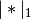
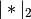

statsmodels.regression.linear_model.GLSAR.fit_regularized¶
-
GLSAR.fit_regularized(method='coord_descent', maxiter=1000, alpha=0.0, L1_wt=1.0, start_params=None, cnvrg_tol=1e-08, zero_tol=1e-08, **kwargs)¶ Return a regularized fit to a linear regression model.
Parameters: method : string
Only the coordinate descent algorithm is implemented.
maxiter : integer
The maximum number of iteration cycles (an iteration cycle involves running coordinate descent on all variables).
alpha : scalar or array-like
The penalty weight. If a scalar, the same penalty weight applies to all variables in the model. If a vector, it must have the same length as params, and contains a penalty weight for each coefficient.
L1_wt : scalar
The fraction of the penalty given to the L1 penalty term. Must be between 0 and 1 (inclusive). If 0, the fit is ridge regression. If 1, the fit is the lasso.
start_params : array-like
Starting values for
params.cnvrg_tol : scalar
If
paramschanges by less than this amount (in sup-norm) in once iteration cycle, the algorithm terminates with convergence.zero_tol : scalar
Any estimated coefficient smaller than this value is replaced with zero.
Returns: A RegressionResults object, of the same type returned by
fit.Notes
The approach closely follows that implemented in the glmnet package in R. The penalty is the “elastic net” penalty, which is a convex combination of L1 and L2 penalties.
The function that is minimized is: ..math:
0.5*RSS/n + alpha*((1-L1_wt)*|params|_2^2/2 + L1_wt*|params|_1)
where RSS is the usual regression sum of squares, n is the sample size, and  and  are the L1 and L2 norms.
Post-estimation results are based on the same data used to select variables, hence may be subject to overfitting biases.
References
Friedman, Hastie, Tibshirani (2008). Regularization paths for generalized linear models via coordinate descent. Journal of Statistical Software 33(1), 1-22 Feb 2010.